FourPHFfit.bulk objectR/plot.FourPHFfit.bulk.R
plot.FourPHFfit.bulk.Rdplot.FourPHFfit plots multiple four-parameter hill function fitted
cumulative germination curves (FPHF curves) or the rate of germination
curves (RoG curves) from a FourPHFfit.bulk object as an object of
class ggplot. Further, either one of the parameters such as time
required for 50% of total seeds to germinate
(\(\textrm{t}_{\textrm{50}_\textrm{Total}}\)), time required for 50% of
viable/germinated seeds to germinate
(\(\textrm{t}_{\textrm{50}_\textrm{Germ}}\)), Time at Maximum
Germination Rate (TMGR), Mean Germination Time (MGT), or uniformity value
(\(\textrm{U}_{\textrm{t}_{\textrm{max}}-\textrm{t}_{\textrm{min}}}\))
can also be annotated in the plot as specified in the annotate
argument.
# S3 method for FourPHFfit.bulk plot( x, rog = FALSE, annotate = c("none", "t50.total", "t50.germ", "tmgr", "mgt", "uniformity"), limits = TRUE, group.col, show.points = FALSE, ... )
| x | An data frame object of class |
|---|---|
| rog | If |
| annotate | The parameter to be annotated in the plot. Either
|
| limits | logical. If |
| group.col | The names of the column in data frame |
| show.points | logical. If |
| ... | Default plot arguments. |
The plot of the cumulative germination curve as an object of class
ggplot.
# \donttest{ data(gcdata) counts.per.intervals <- c("Day01", "Day02", "Day03", "Day04", "Day05", "Day06", "Day07", "Day08", "Day09", "Day10", "Day11", "Day12", "Day13", "Day14") fits <- FourPHFfit.bulk(gcdata, total.seeds.col = "Total Seeds", counts.intervals.cols = counts.per.intervals, intervals = 1:14, partial = TRUE, fix.y0 = TRUE, fix.a = TRUE, xp = c(10, 60), tmax = 20, tries = 3, umax = 90, umin = 10) # Plot FPHF curves plot(fits, group.col = "Genotype")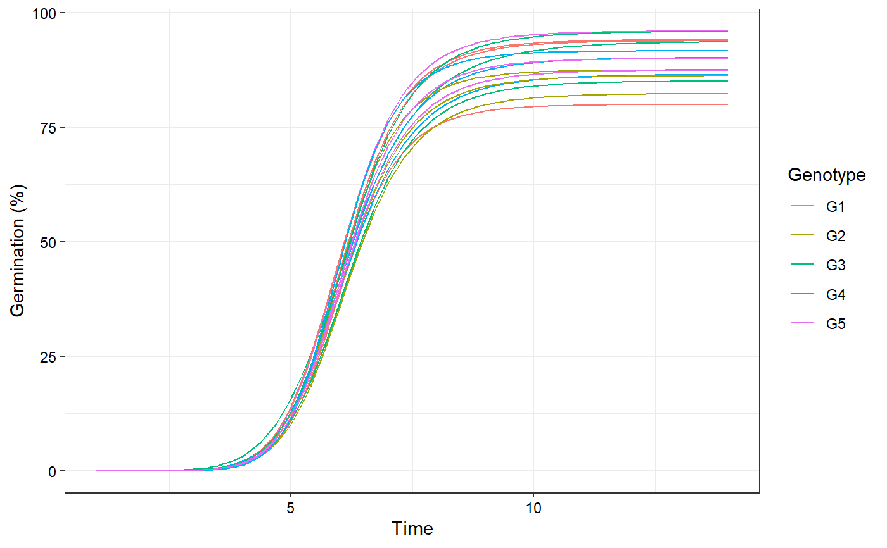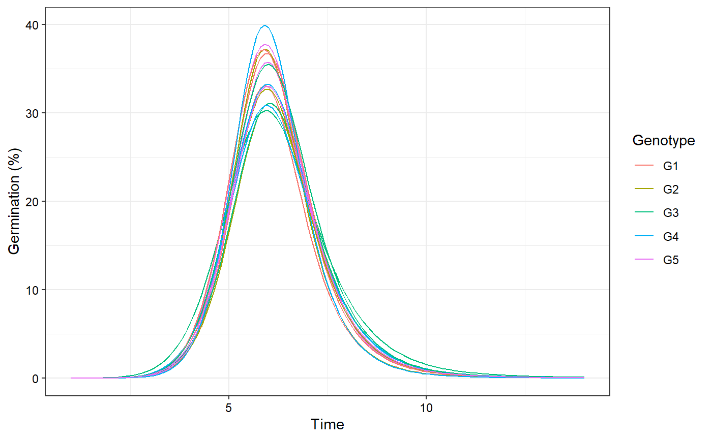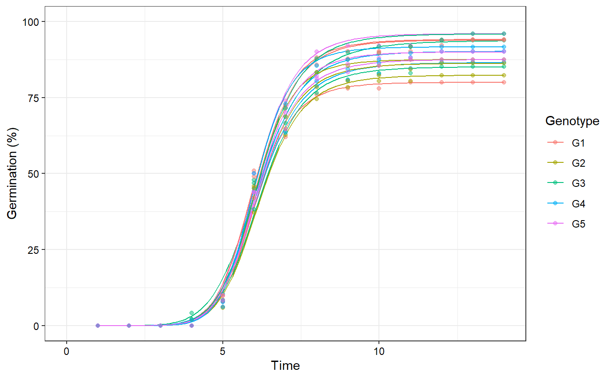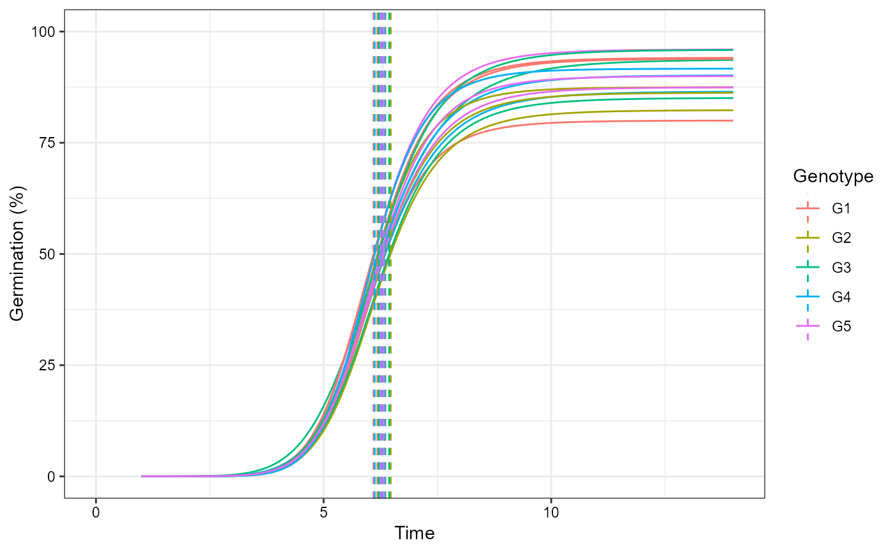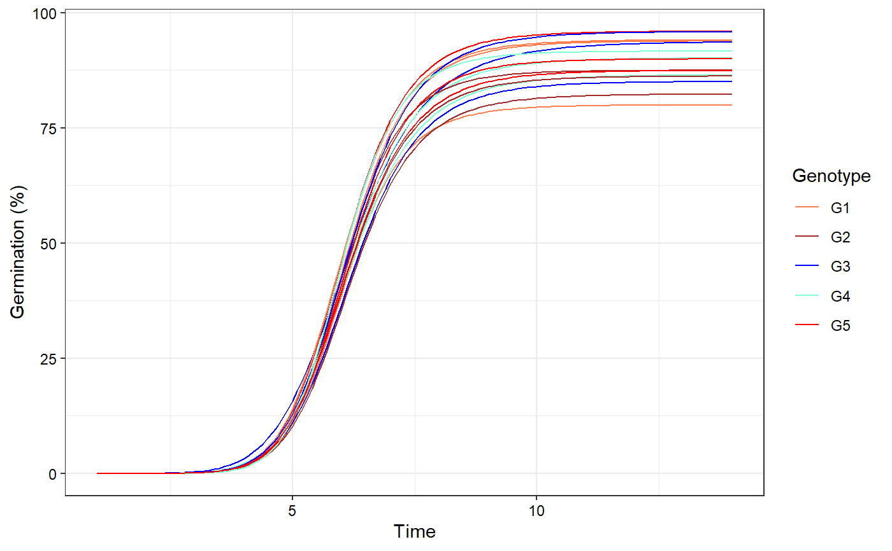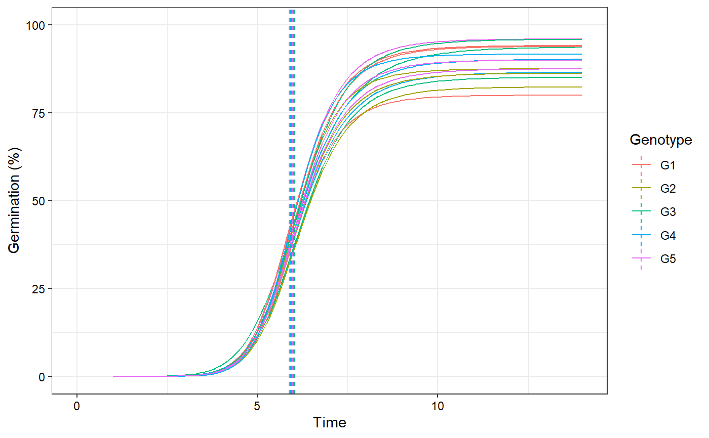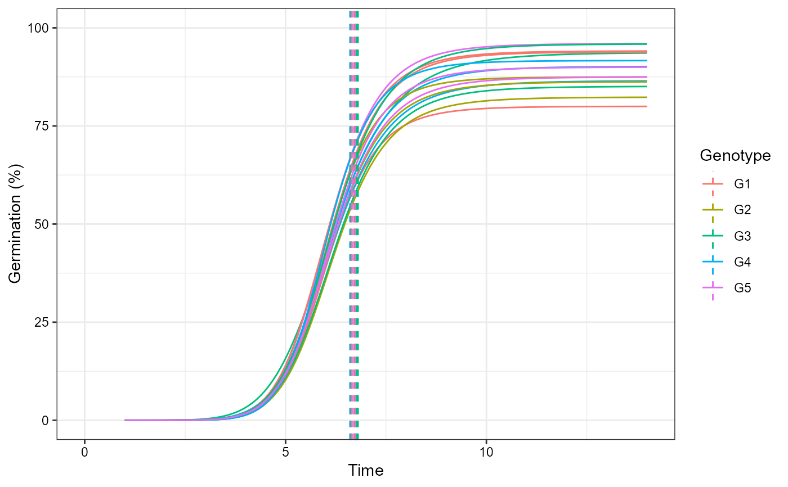#> Warning: position_dodge requires non-overlapping x intervals#> Warning: position_dodge requires non-overlapping x intervals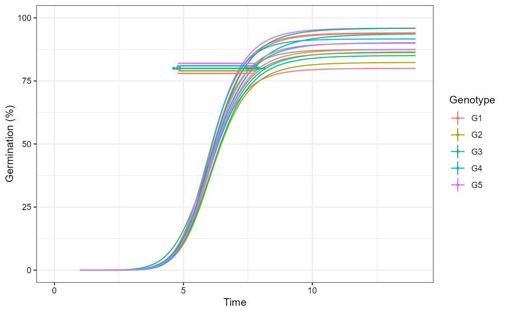# Plot ROG curves with annotations plot(fits, rog = TRUE, group.col = "Genotype", annotate = "t50.total")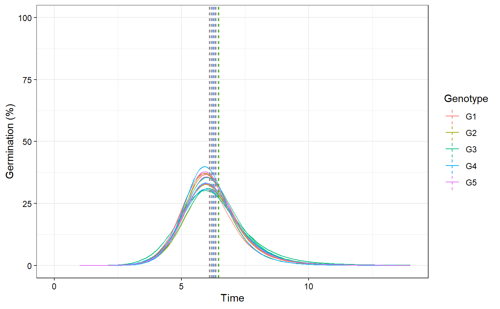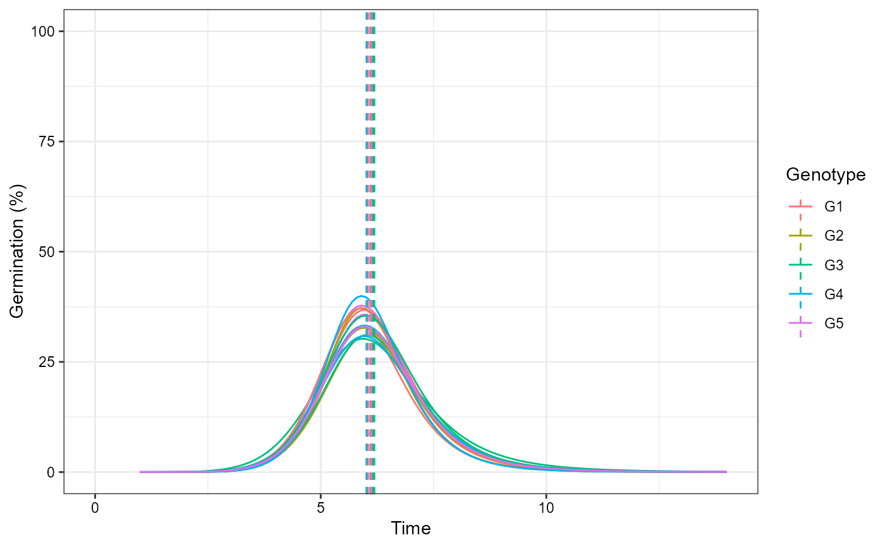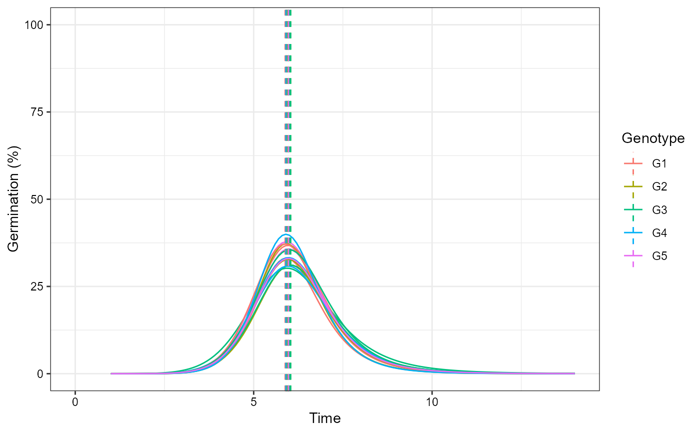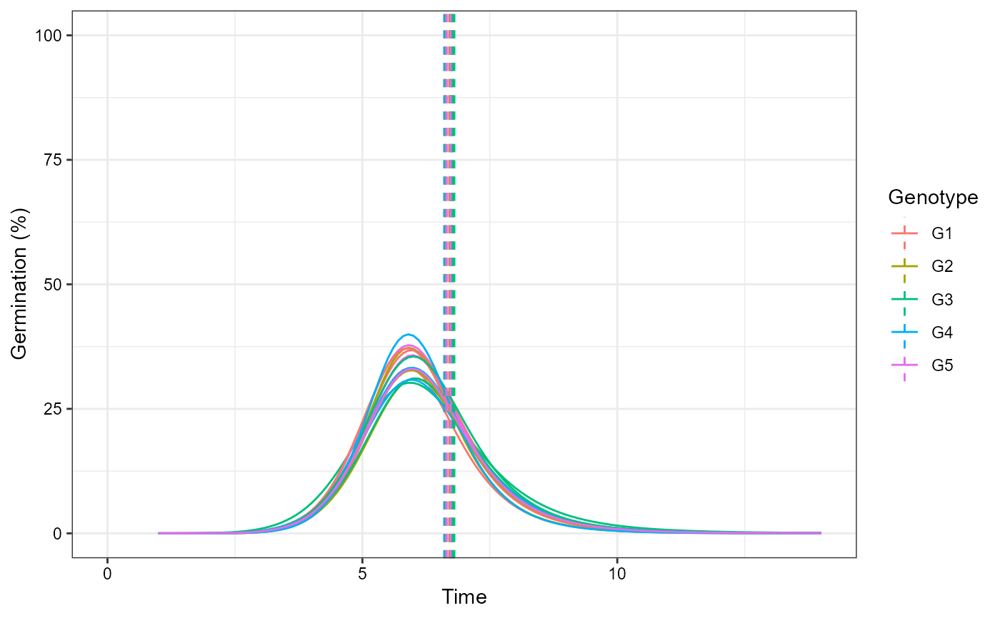#> Warning: position_dodge requires non-overlapping x intervals#> Warning: position_dodge requires non-overlapping x intervals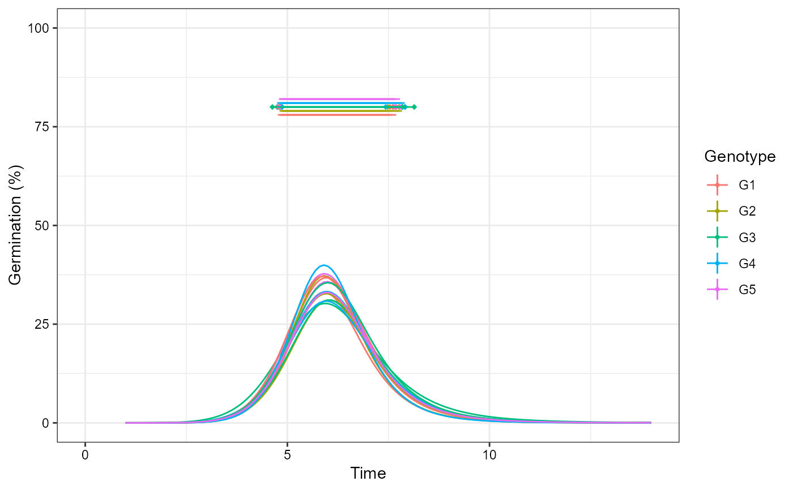# Change colour of curves using ggplot2 options library(ggplot2) curvesplot <- plot(fits, group.col = "Genotype") # 'Dark2' palette from RColorBrewer curvesplot + scale_colour_brewer(palette = "Dark2")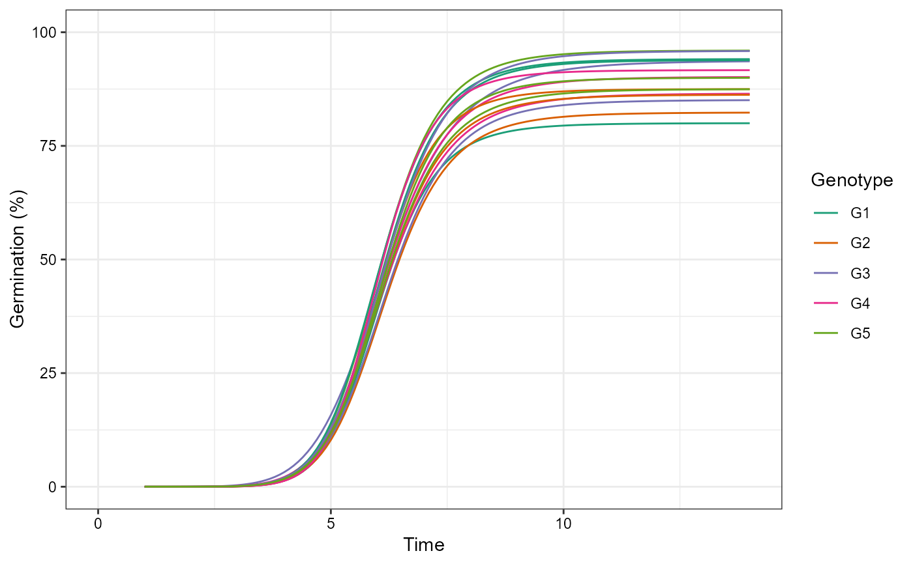# Manual colours curvesplot + scale_colour_manual(values = c("Coral", "Brown", "Blue", "Aquamarine", "Red"))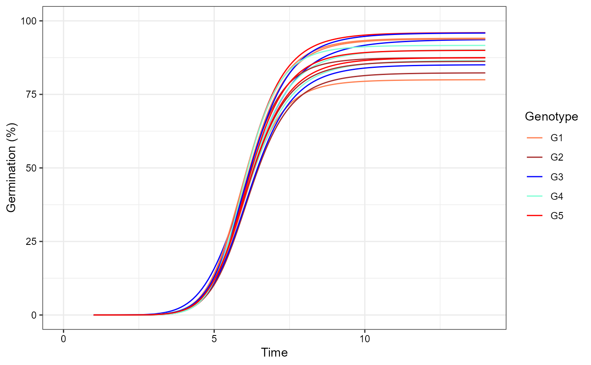# }